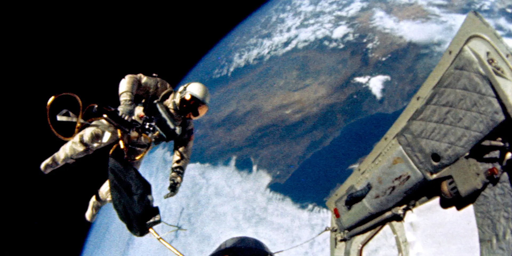

The Korean war began on June 25, 1950, when some 75,000 soldiers from the North Korean People’s Army poured across the 38th parallel, the boundary between the Soviet-backed Democratic People’s Republic of Korea to the north and the pro-Western Republic of Korea to the south. This invasion was the first military action of the Cold War. By July, American troops had entered the war on South Korea’s behalf. As far as American officials were concerned, it was a war against the forces of international communism itself. After some early back-and-forth across the 38th parallel, the fighting stalled and casualties mounted with nothing to show for them. Meanwhile, American officials worked anxiously to fashion some sort of armistice with the North Koreans. The alternative, they feared, would be a wider war with Russia and China–or even, as some warned, World War III. Finally, in July 1953, the Korean War came to an end. In all, some 5 million soldiers and civilians lost their lives in what many in the U.S. refer to as “the Forgotten War” for the lack of attention it received compared to more well-known conflicts like World War I and II and the Vietnam War. The Korean peninsula remains divided today.

The Cold War was a period of geopolitical tension marked by competition and confrontation between communist nations led by the Soviet Union and Western democracies including the United States. During World War II, the United States and the Soviets fought together as allies against Nazi Germany. However, U.S./Soviet relations were never truly friendly: Americans had long been wary of Soviet communism and Russian leader Joseph Stalin’s tyrannical rule. The Soviets resented Americans’ refusal to give them a leading role in the international community, as well as America’s delayed entry into World War II, in which millions of Russians died.
These grievances ripened into an overwhelming sense of mutual distrust and enmity that never developed into open warfare (thus the term “cold war”). Soviet expansionism into Eastern Europe fueled many Americans’ fears of a Russian plan to control the world. Meanwhile, the USSR came to resent what they perceived as U.S. officials’ bellicose rhetoric, arms buildup and strident approach to international relations. In such a hostile atmosphere, no single party was entirely to blame for the Cold War; in fact, some historians believe it was inevitable.

After World War II drew to a close in the mid-20th century, a new conflict began. Known as the Cold War, this battle pitted the world’s two great powers—the democratic, capitalist United States and the communist Soviet Union—against each other. Beginning in the late 1950s, space became another dramatic arena for this competition, as each side sought to prove the superiority of its technology, its military firepower and–by extension–its political-economic system.